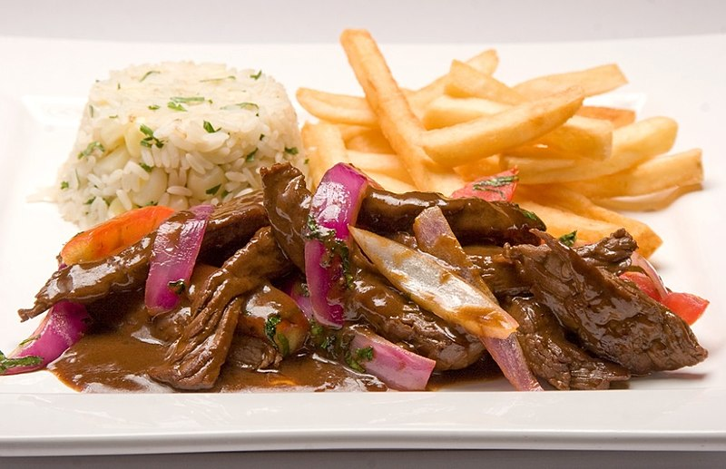

LOMO SALTADO

DESCRIPTION
El lomo saltado es un plato sumamente popular de la llamada cocina fusión que
combina la tradición de la gastronomía china de saltear los alimentos con
ingredientes peruanos como ají amarillo, cilantro y tomate. Este suculento plato
fuerte siempre se acompaña con arroz blanco y papas fritas.
INGREDIENTES
- 1 libra de lomo de res cortado en tiras delgadas
- 2 dientes de ajo, finamente picados
- 2 Sal*
- 2 Pimienta al gusto
- 3 cucharadas de aceite vegetal
- 1 cebolla morada (roja) pequeña, cortada en rodajas gruesas
- 2 tomates (jitomates) perita cortados en rodajas gruesas
- 1 ají amarillo sin semillas ni venas, cortado en tiras finas
- 2 cucharadas de salsa de soya
- 3 cucharadas de vinagre de vino tinto
- 1/3 taza de caldo de carne (caldo de res)
- 1/2 taza de cilantro fresco, picado grueso
- 2 tazas de papas fritas
- 2 Arroz blanco como acompañante
PASOS
- Sazona la carne con ajo, sal y pimienta.
- Coloca un wok o una sartén a fuego muy alto. Añade el aceite y saltea la carne,
unas pocos tiras a la vez (2 minutos por tanda)para
que no se suden, sino que se doren.
- Agrega la cebolla, el tomate, el ají y saltea todo por aproximadamente 2 a 3
minutos. Los tomates y la cebolla deben
estar crujientes, no blandos. Añade la salsa de soya y el vinagre a los lados del wok o la sartén y mezcla todo. Añade el caldo de carne (de res)
y cocina 1 1/2 minutos más. Pruébalo para ajustar la sazón.
- Apaga el fuego, agrega el cilantro picado y sírvelo inmediatamente con papas fritas y arroz blanco.